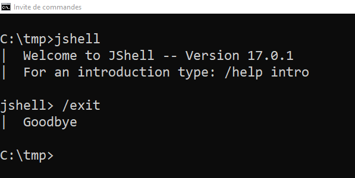
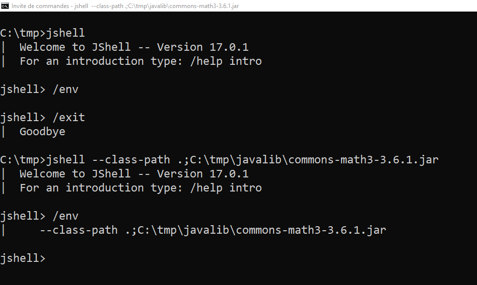

Quick Developer Notes : Jshell
Contenu
Besoin
Vous avez besoin de tester ou d’expérimenter rapidement un bout de code Java et l’idéal serait d’avoir une REPL pour Java… Cela tombe bien il y en a une depuis le JDK 9 ! Reste maintenant à connaître les commandes de base pour commencer à l’utiliser : c’est l’objet de ce billet qui est un petit aide-mémoire sur les options et les commandes de base.
Lancement
L’outil jshell fait partie des binaires distribués dans votre JDK et devait être dans le PATH si java et javac le sont.
Pour le lancer il suffit donc normalement de saisir jshell dans une invite de commande ou un shell.
Il y a tout un ensemble d’options que l’ont peut utiliser au lancement, nous en voyons juste quelques unes ci-après qui me semblent les plus susceptibles d’être utiles.
Connaître la version de jshell
Pour connaitre la version de JShell, vous avez les options --version qui ne fait qu’afficher la version et --show-version qui affiche la version et lance jshell

Afficher de l'aide
Vous avez bien sûr les classiques options pour afficher les options de l’outil avec --help, -h ou -?, par exemple jshell -?.
Préciser un classpath
Il est possible de préciser des bibliothèques à inclure dans le classpath avec l’option --class-path <path>.
Par exemple si je veux pouvoir importer des classes de la la bibliothèque Apache Common Math, le jar correspondant étant dane le répertoire C:\tmp\javalib\ : jshell --class-path .;C:\tmp\javalib\commons-math3-3.6.1.jar.
Ici on a également préciser le répertoire courant. Le séparateur est ; sous Windows et est : sous système Unix.
Il est possible de préciser un script de démarrage avec l’option --startup <script démarrage>.
Cela peut être un fichier local que vous avez écrit ou un des scripts prédéfinis que l’on précise par une valeur spécifique :
DEFAULT: importe les bibliothèques standards de Java les plus communément utilisées. Et fait par défaut si on ne précise pas l’option--startupJAVASE: importe l’ensemble des bibliothèques standard de Java.PRINTING: définitprint,printlnetprintfcomme des fonctions directement utilisables dansjshell.
Les scripts de démarrage sont joués lors du démarrage mais également lors de redémarrages de session qui peuvent être provoquées par certaines commandes que nous verrons par la suite.
On notera qu’il n’y a pas de différence aux niveaux des imports réalisés par défaut entre jshell et jshell --startup DEFAULT.
Si on lance jshell avec l’option --startup PRINTING, on n’a plus les imports par défaut. avec PRINTING on note qu’on peut utiliser directement print.
On peut renseigner plusieurs fois l’option pour effectuer le chargement de plusieurs scripts au démarrage.
Utiliser des fonctionnalités en preview dans le JDK
Si vous voulez pouvoir tester avec jshell les fonctionnalités en preview de votre JDK, il suffit de le lancer avec l’option --enable-preview : jshell --enable-preview.
Commandes
Une fois dans jshell, vous pouvez saisir du code Java directement.
Les commandes de jshell (par exemple ouvrir un fichier) sont introduites par le caractère /.
Il y a des nombreuses commandes possibles pouvant être paramétrées avec options. Comme pour les options de lancement, on se concentre ci-après sur les plus utiles (de mon point de vue) dans une utilisation quotidienne.
Sortir de jshell
Pour sortir de jshell, la commande est simplement /exit.

Obtenir de l'aide
/helppour afficher la liste des commandes et ce qui est nommé subjects dansjshell.
- Il est possible de passer à la suite de
helpun nom de commande (sans oublier le/devant) ou un om de subject. Par exemple/help /exit/help /intro
Complétion de commande
La complétion de commande fonctionne avec TAB après avoir commencé à saisir le caractère /.
Ouvrir un fichier
Pour ouvrir et faire exécuter un fichier de code java : /open <nom-fichier>.
par exemple avec l’invite de commande depuis laquelle jshell a été ouverte, positionnée dans le répertoire dans lequel le fichier perfectNumber.jsh se trouve.
/open perfectNumber.jsh
Il est de bon ton d’utiliser l’extension jsh pour vos fichiers de scripts jshell mais ce n’est pas une obligation. Ils peuvent avoir l’extension java ou n’importe quelle autre valeur.
A toutes fins utiles, le script utilisé dans cet exemple.
|
|
Vous pouvez également utiliser la commande /open pour ouvrir les mêmes scripts par défaut que ceux qu’on peut lancer au démarrage de jshell :
DEFAULT: importe les bibliothèques standards de Java les plus communément utilisées.JAVASE: importer l’ensemble des bibliothèques standard de Java.PRINTING: définitprint,printlnetprintfcomme des fonctions directement utilisables dansjshell.
Lister les imports
Pour lister les imports la commande est /imports. Cela vous donne la liste des imports disponibles directement dans jshell.
Dans la copie d’écran, on voit l’effet de la commande suite au lancement sans options de jshell, avec les imports par défaut.
Suite à l’ouverture du script perfectNumber.jsh qui réalise 3 imports supplémentaires, on voit apparaître ces derniers dans la liste suite à l’utilisation de la commande imports.
Lister les snippets
Un snippet est un morceau de code saisi ou chargé dans jshell.
Pour avoir la liste des snippets saisi : /list
Le code devant le snippet est un identifiant du snippet.
Cet identifiant peut être utilisé dans certaines commandes pour le référencer comme /drop ou /save qui permettent respectivement de supprimer et de sauver des snippets.
Avec /list -all on liste tous les snippets y compris ceux qui ont échoués et ceux exécutés au lancement de jshell (comme les imports effectués par défaut que l’on voit dans la copie d’écran ci-dessus).
On notera que les identifiants des snippets exécutés au lancement et ceux en erreur, commence respectivement pas un s et un e.
Lister les types, les variables et les méthodes
Il y a 3 commandes pour lister les types (classes, énumérations, interfaces, annotations), les variables et les méthodes définies dans la sessions jshell courante : /types, /varset /methods.
Pour chacune de ces 3 commandes vous pouvez utiliser l’option --all pour avoir également ce qui a été chargé au démarrage (entre autre chose).
Sauvegarder les snippets
On peut sauvegarder un ou des snippets en précisant un identifiant /save <id1> <nom fichier> ou une plage d’identifiants /save <id1>-<id2> <nom fichier>.
Il faut alors l’utiliser en conjonction avec la commande /list.
Le contenu du fichier obtenu dans l’exemple en copie d’écran est le suivant :
|
|
Il est également possible de sauvegarder l’historique des commandes avec les snippets avec save -history <nom fichier> ou tous les snippets avec save -all <nom fichier>
L’exemple précédent donne respectivement les 2 fichiers suivants :
|
|
|
|
On notera qu’avec le /save -all on sauvegarde tous les snippets mais pas les commandes.
Manipuler les variables d'environnements de la session
La commande /env sans options permet de visualiser les variables d’environnement définis dans la session jshell comme le classpath.

Cette commande vous permet également de définir de nouvelle variables d’environnement pour la session, très utile pour modifier le classpath par exemple.
Manipuler l'historique des commandes
On peut se déplacer dans l’historique des commandes d’une session avec les flèches haut et bas.
La commande /history permet d’avoir la liste des commandes effectuées.
Vous pouvez rechercher dans l’historique avec la combinaison de touches Ctrl + R.
Conclusion
C’était un tour rapide et non-exhaustif : j’ai laissé certaines commandes et options de côté.
Ainsi il est possible d’éditer les snippets directement dans jshell par exemple.
jshell supporte également les modules au besoin.
C’est un outil intéressant pour expérimenter rapidement une idée ou tester un petit exemple ; on aurait tord de se priver de l’utiliser.
Pour aller plus loin, la documentation d’Oracle est déjà très complète :
Auteur TGITS
Modifié 2022-02-20